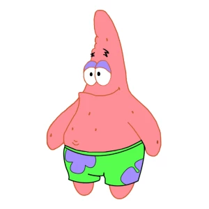
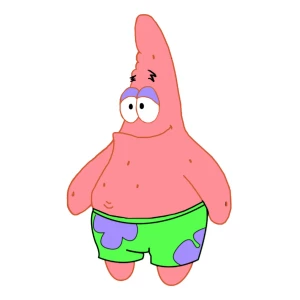

история патрика
 

Он — розовая морская звезда, которая живет под скалой в городе Бикини Боттом и любит есть, отдыхать и беспокоить соседа Сквидварда. Патрик глуповатый, но добродушный и верный друг, который ценит свою дружбу с Губкой Бобом.
все персонажи